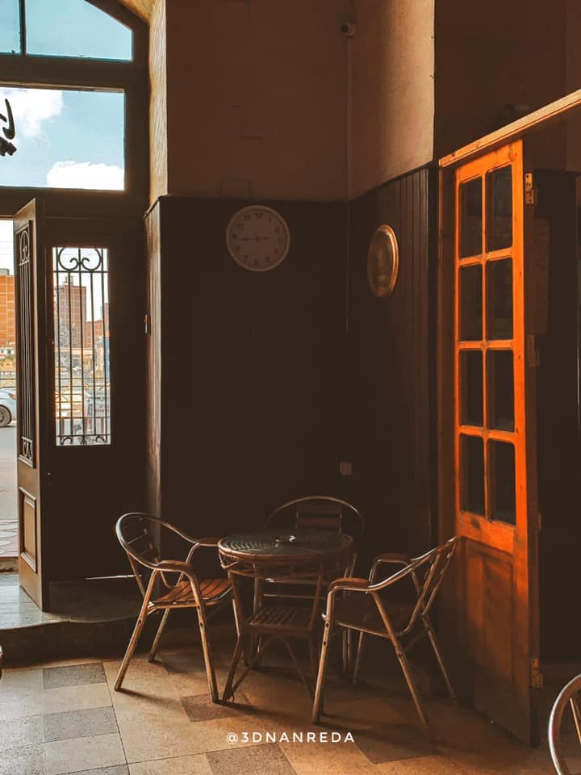
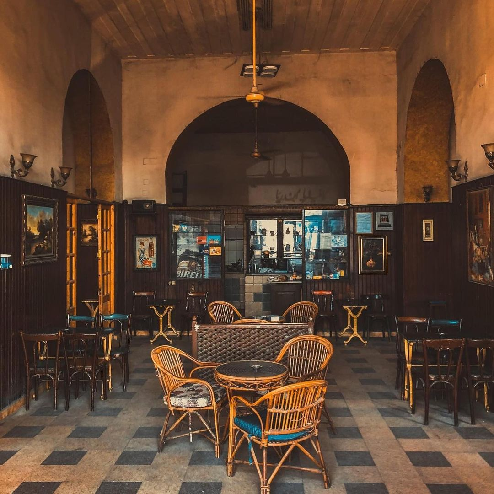
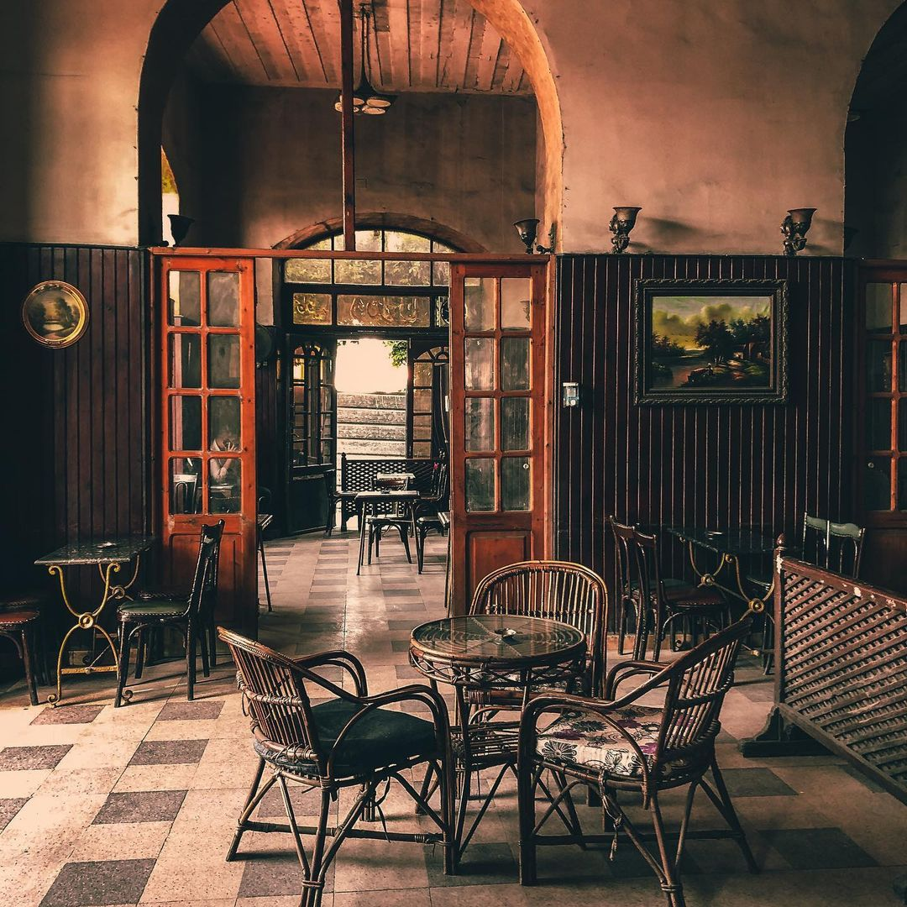

The Greeks lived in Egypt since ancient times, and the Greeks became Egyptian and began to speak the Arabic language, in a mixture between the Greek civilization and the Pharaonic civilization. There are Greek words that are still in circulation among us until now, such as “Catapult”, which is a war machine, and “Dolphin”, “Taro”, “Caraway”, and “Cabbage”.
Specifically, from the city of Mansoura, we went to some places that were owned by Greeks, and we asked who lived with these people and the children of those who lived with them. Hajj/ Ahmed Abdel-Muttalib, who reached the age of 62, said that he was working in (Randblois) with the Greek Khawaja “Yanni” and Khawaja used to work for him. “Makhali” and Khawaja “George” who converted to Islam after that to marry a Muslim woman, and called himself Ibrahim. There was Hajj/ Metwally sitting on the money box, then after that the “Randbloa” was sold to Hussein Huwaidaq and Azza Issa Ali, the owners of Maxim. 
Andrea's café Professor Sami El-Sherbiny said about it that Andreas café was owned by a Greek
(Constantin Nicolopulos Andrea), who established it in 1907 to be a meeting place for the Greeks in Mansoura city.
Days pass and the “Greek Khawaja” goes to Athens and sells it to another Greek to sell it in turn,
then he bought the cafe after that Hajj/ Hussein Othman and it was This is in 1958 during the
reign of the President Gamal Abdel Nasser.
The new owner refused to change the name or any
of the features of the café. It was inherited by his sons, who adhered to their father s will not to
change the name of the café or any of its features. Andrea became one of the most famous cafes in
the city of Mansoura.
In the sixties, the café was famous for its pioneers in the cotton trade, land brokers, and real estate. The café was the second licensed in Mansoura after the civil cafe, which is currently called Maarouf Coffee, in the new road. Andrea's café had an extension on the Nile covered with trees, until the governor of Dakahlia at that time, Saad El-Sherbiny, removed it to expand Al-Gomhoria Street, which is Al-Bahr Street. Some Greek merchants were sitting in the café, such as Bandilides, the owner of a coffee mill, and Khawaja, Michoa, the owner of a French bakery. 
And we went to Hajj/ Madbouly, who was 65 years old, where he was sitting in the far, quiet corner of the café, so I spoke to him, so he narrated that he had been sitting in the café for 38 years, and he said that the café was built in 1905 and was owned by the Greek Khawaja Andrea, and some famous people were sitting in the café Such as “Anis Mansour”, the actors Younes Shalabyand Ibrahim Abdel Razek,” and some football players were sitting in the café, such as “Eid Mustafa,the goalkeeper of Mansoura, and Al-Sabahi, the Mansoura player who scored the equalizing goal in Al-Ahly in the year 64, and he was playing in Al-Ahly at that time, Rifaat Al-Fanajili and Taha Ismail.” Al-Hajj added / Madbouly that the coffee-storing program presented by the presenter Samia al-Atrebi recorded an episode on Andrea's café, and I recorded with them.
In the end, he said, “I hope that my voice will reach the radio for Amal Fahmy's program,
because I wish to record with her before I die, as I sent many letters,
but I was not lucky”. Hajj/ Muhammad al-Khaleeji, one of the pioneers of the café,
said that he had been sitting in the café for a long time, and Saad al-Shaer was sitting
in the café and was reciting some of his poems as people gathered around him, and he mentioned
that he did not know that the café was owned by a Greek man.
Hajj/ Muhammad Shaban Shadi said that he has been sitting in the café for several years and always follows the Zamalek
matches on it, but he does not know that the café had a Greek owner.

Mahmoud Ayoub,50 years old, one of Andrea's pioneers, says: “I have been a pioneer
of this place for nearly 30 years”. Various poetry evenings were held in it, and it was a meeting
place for intellectuals. Faten Hamama and Anis Mansour frequented it, as was going on inside.
Various political discussions without rejecting any sect or objecting to an opinion holder in an
inappropriate way. This is a brief overview of one of the landmarks of the ancient city of Mansoura,
so that our promising youth will know the value of the city of Mansoura and its history.
We hope that our youth will write letters of the light of a new honorable history for our great Egypt.